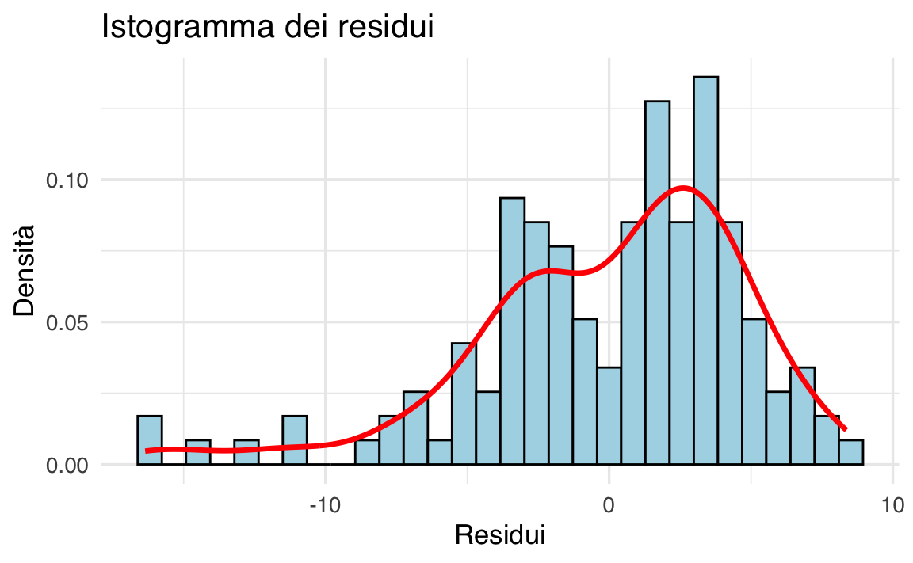
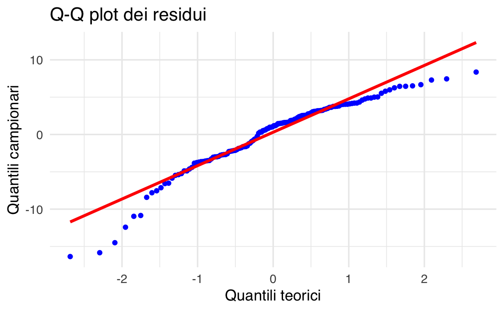

here::here("code", "_common.R") |>
source()
# Load packages
if (!requireNamespace("pacman")) install.packages("pacman")
pacman::p_load(lavaanExtra, lavaanPlot, semTools, haven, mediation, semPlot,
performance, car, lmtest, interactions, sjPlot)23 Riparazione affettiva post-infedeltà
In questo capitolo imparerai a
- distinguere tra moderazione, mediazione e mediazione moderata.
Prerequisiti
- Leggere A step-by-step tutorial for performing a moderated mediation analysis using PROCESS di Clement & Bradley-Garcia (2022)
Preparazione del Notebook
23.1 Introduzione
Questo capitolo ha l’obiettivo di illustrare il tutorial proposto da Clement & Bradley-Garcia (2022), in cui l’analisi dei percorsi (path analysis) viene applicata a tre tipologie di analisi statistica: il modello di moderazione, il modello di mediazione semplice e il modello di mediazione moderata.
23.2 Modello di Mediazione Semplice
Il modello di mediazione analizza in che modo una variabile indipendente (IV o X) influisca su una variabile dipendente (DV o Y) attraverso una variabile intermediaria, definita variabile mediatrice (M). In questo schema, l’effetto della variabile indipendente sulla variabile dipendente si scompone in due componenti:
-
Effetto diretto (c′): l’influenza dell’IV sulla DV al netto del contributo di M.
- Effetto indiretto (a × b): il percorso che passa attraverso M.
Per esempio, nel contesto delle relazioni di coppia, si può ipotizzare che la fiducia nel partner trasgressore (IV) promuova il perdono (DV) grazie all’incremento di una variabile mediatrice come la comprensione o l’empatia (M) (Clement & Bradley-Garcia, 2022; Hargrave & Hammer, 2016). L’analisi di tale dinamica mediante un modello di mediazione semplice permette di comprendere meglio quali elementi possano essere potenziati attraverso interventi mirati, come il rafforzamento della fiducia o il potenziamento dell’empatia, per favorire il perdono.
La struttura di un modello di mediazione semplice può essere così riassunta:
-
IV → M: l’IV influenza direttamente la variabile mediatrice.
-
M → DV: la variabile mediatrice influenza la DV.
- IV → DV (effetto diretto): anche tenendo conto di M, l’IV esercita un’influenza residua sulla DV.
L’obiettivo principale è stimare l’effetto indiretto, ovvero il contributo di M nella relazione fra IV e DV. Questo modello consente di individuare percorsi specifici di influenza e di stabilire se e in che misura una variabile intermediaria contribuisca a spiegare il legame fra IV e DV.

La letteratura evidenzia che la fiducia in un partner romantico è collegata alla compassione verso di esso (Salazar, 2015), e che la compassione, a sua volta, è uno dei principali predittori di perdono (Davis, 2017). Sulla base di questi risultati, si può ipotizzare che la fiducia favorisca il perdono attraverso la compassione provata per il partner romantico.
Per verificare questa ipotesi, si può strutturare un modello di mediazione in cui:
- la fiducia nel partner romantico influisce sulla compassione (percorso “a”);
- la compassione, a sua volta, influenza il perdono (percorso “b”).
In questo scenario, l’effetto indiretto (a × b) rappresenta il modo in cui la fiducia promuove il perdono grazie alla maggiore compassione. Se l’analisi statistica conferma la significatività dell’effetto indiretto, si può concludere che la compassione media l’associazione tra fiducia e perdono. Viceversa, se tale effetto non risulta significativo, non si possono trarre conclusioni circa un ruolo di mediazione della compassione.
Oltre all’effetto indiretto, il modello di mediazione consente di esaminare l’effetto diretto della fiducia sul perdono, controllando per la compassione. In altre parole, si valuta se la fiducia mantenga un’influenza significativa sul perdono anche quando la compassione è tenuta costante. L’effetto totale (c) del modello di mediazione è pertanto la somma dell’effetto diretto (c′) e dell’effetto indiretto (a × b), cioè (c = c’ + (a b)).
Secondo la letteratura (Meule, 2019), si parla di mediazione completa quando l’effetto indiretto risulta significativo mentre l’effetto diretto non lo è; si parla invece di mediazione parziale quando entrambi gli effetti (diretto e indiretto) risultano significativi.
In conclusione, un modello di mediazione semplice può gettare luce su come la compassione sia correlata alla fiducia nel partner romantico e al perdono. Tuttavia, per comprendere le circostanze in cui la fiducia e la compassione risultino più o meno associate, è necessario considerare anche un modello di moderazione.
23.3 Modello di Moderazione
In un modello di moderazione, l’obiettivo è stabilire se una terza variabile, detta variabile moderatrice (W), modifichi la forza o la direzione della relazione tra la variabile indipendente (IV) e la variabile dipendente (DV). Come evidenzia Hayes (2018, p. 220):
“Identificare un moderatore di un effetto aiuta a stabilire le condizioni limite di quell’effetto o le circostanze, gli stimoli o il tipo di persone per cui l’effetto è maggiore o minore, presente o assente, positivo o negativo, e così via.”
Da un punto di vista statistico, verificare un modello di moderazione equivale a testare l’interazione tra le variabili, analogamente a quanto accade nell’analisi della varianza (ANOVA; Frazier, Tix, & Barron, 2004). Si parla di effetto di interazione quando l’effetto dell’IV sulla DV cambia in funzione dei livelli di W (Hayes, 2018). In altri termini, il ricercatore si chiede se l’associazione tra IV e DV risulti più o meno intensa (o addirittura opposta nel segno) a seconda del valore assunto dal moderatore.
Come mostrato nel Pannello B della Figura fig-clement-1, un modello di moderazione mette in luce le condizioni specifiche in cui una determinata relazione può risultare più o meno forte. Tornando all’esempio incentrato su fiducia, compassione e perdono, potremmo domandarci in quali situazioni la fiducia favorisca maggiormente la compassione. Nella letteratura sui comportamenti prosociali, l’umiltà è stata individuata come fattore essenziale per promuovere la compassione (Worthington & Allison, 2018). Alcuni studi indicano che vedere il proprio partner romantico come umile è associato anche alla percezione di maggiore compassione (McDonald, Olson, Goddard, & Marshall, 2018), e che la fiducia è positivamente correlata a livelli più elevati di umiltà (Wang, Edwards, & Hill, 2017). Di conseguenza, è plausibile ipotizzare che l’effetto della fiducia sulla compassione vari a seconda di quanto il partner venga percepito come umile, configurando così un tipico esempio di moderazione.
23.4 Modello di Mediazione Moderata
Il concetto di mediazione moderata, introdotto da James e Brett (1984), descrive come una variabile moderatrice (W) possa influenzare l’ampiezza o la presenza di un effetto indiretto (Preacher, Rucker, & Hayes, 2007). In altre parole, si parla di mediazione moderata quando l’intensità dell’effetto di mediazione varia in funzione dei livelli del moderatore (Preacher et al., 2007).
Come illustrato nel Pannello C della Figura fig-clement-1, in un modello di mediazione moderata la relazione tra una variabile indipendente (X) e una variabile dipendente (Y), mediata da un’altra variabile (M), dipende dal valore assunto da W. Nel nostro esempio che include fiducia, umiltà, compassione e perdono, si potrebbe supporre che la fiducia nel partner romantico (X) agisca sul perdono (Y) attraverso la compassione (M), ma che la forza di tale mediazione sia potenziata o attenuata in base alla percezione del partner come umile (W). In pratica, se il partner è considerato molto umile, l’effetto indiretto di X su Y (mediato da M) potrebbe essere particolarmente marcato; al contrario, a livelli bassi di umiltà, il processo di mediazione potrebbe indebolirsi o persino scomparire.
L’analisi di mediazione moderata fornisce dunque un quadro più completo del fenomeno oggetto di studio, poiché chiarisce come (attraverso M) e in quali condizioni (valori di W) un effetto di X su Y si manifesti, offrendo indicazioni utili per interventi e ipotesi di ricerca più mirate.
23.5 Esempio di Mediazione Moderata
Nel tutorial di Clement & Bradley-Garcia (2022) sono presentati i dati di uno studio che analizza l’associazione fra fiducia di coppia, compassione verso il partner responsabile di un’offesa, percezione di tale partner come umile e perdono in persone che avevano sperimentato una ferita da attaccamento. Secondo Johnson, Makinen e Millikin (2001), le ferite da attaccamento corrispondono a una violazione percepita della fiducia o a un abbandono verificatosi in un momento critico, durante il quale la persona ferita aveva bisogno del sostegno e della cura del partner.
All’interno dello studio, la fiducia di coppia è stata definita come il grado di onestà e di buona volontà che la persona ferita attribuisce al partner offensore (Larzelere & Huston, 1980). Un elemento cruciale per superare le ferite da attaccamento e ristabilire la fiducia nella relazione è il perdono, concettualizzato come l’insieme di elevate motivazioni benevolenti (ad es. buona volontà) e basse motivazioni di evitamento o vendetta nei confronti del partner trasgressore.
Il campione era composto da 138 partecipanti che avevano vissuto una ferita da attaccamento nella loro attuale relazione romantica e che avevano scelto di perdonare il partner. I partecipanti hanno compilato questionari self-report online, descrivendo brevemente la ferita subita e indicando se avevano effettivamente perdonato (sì/no).
-
Fiducia di coppia: misurata con la Dyadic Trust Scale (DTS; Larzelere & Huston, 1980), composta da 8 item valutati su una scala da 1 (“fortemente d’accordo”) a 7 (“fortemente in disaccordo”).
-
Compassione verso il partner: misurata con una versione modificata della Compassion Scale (CS; Pommier, Neff, & Tóth-Király, 2020), adattata per rilevare la compassione verso il partner offensore. La scala comprende 16 item, valutati da 1 (“quasi mai”) a 5 (“quasi sempre”).
-
Percezione del partner come umile: misurata con la Relational Humility Scale (RHS; Davis et al., 2011), modificata per riflettere il sentimento del partecipante verso il partner che ha commesso l’offesa. Gli item sono valutati su una scala da 1 (“fortemente in disaccordo”) a 5 (“fortemente d’accordo”).
-
Perdono del partner offensore: misurato tramite il Transgressions-related Interpersonal Motivations Inventory (TRIM; McCullough et al., 1998; McCullough, Fincham, & Tsang, 2003). Il TRIM valuta:
- Motivazione ad evitare il partner.
- Motivazione a cercare vendetta.
- Motivazione a mostrare benevolenza verso il partner.
- Motivazione ad evitare il partner.
Di seguito un estratto del codice (in R) per il caricamento dei dati, l’esplorazione delle variabili e l’individuazione di eventuali outlier.
# Caricamento dei dati da un file SPSS
data <- read_sav(here::here("data", "clement_2022.sav"))# Esplorazione della struttura del dataset
glimpse(data)
#> Rows: 138
#> Columns: 4
#> $ CS_TOT <dbl> 58, 68, 66, 70, 70, 44, 66, 76, 67, 43, 66, 68, 68, 69, 7…
#> $ RHSTOT <dbl> 59, 53, 52, 35, 55, 36, 53, 54, 49, 45, 27, 52, 34, 29, 4…
#> $ TRIM_Ben <dbl> 19, 22, 26, 24, 25, 12, 21, 29, 30, 6, 25, 17, 29, 22, 9,…
#> $ DTST <dbl> 54, 51, 48, 34, 48, 32, 52, 52, 49, 47, 36, 34, 47, 56, 5…# Statistiche descrittive
describe(data)
#> vars n mean sd median trimmed mad min max range skew
#> CS_TOT 1 138 64.19 8.53 66.0 65.04 8.15 35 76 41 -0.88
#> RHSTOT 2 138 42.92 10.19 44.5 43.34 11.12 17 60 43 -0.33
#> TRIM_Ben 3 138 21.86 5.68 22.0 22.35 5.93 6 30 24 -0.74
#> DTST 4 138 38.59 10.25 39.0 38.96 11.86 11 56 45 -0.26
#> kurtosis se
#> CS_TOT 0.50 0.73
#> RHSTOT -0.57 0.87
#> TRIM_Ben 0.12 0.48
#> DTST -0.64 0.87# Identificazione degli outlier per ciascuna variabile
outliers_results <- check_outliers(data)
# Visualizzazione dei risultati sugli outlier
print(outliers_results)
#> OK: No outliers detected.
#> - Based on the following method and threshold: mahalanobis (20).
#> - For variables: CS_TOT, RHSTOT, TRIM_Ben, DTST# 1. Trasformiamo il dataset da wide a long
data_long <- data %>%
pivot_longer(
cols = everything(), # Converte tutte le colonne
names_to = "Variabile", # Nome della nuova colonna con i nomi delle variabili
values_to = "Valore" # Nome della nuova colonna con i valori
)
# 2. Creiamo il boxplot con ggplot2
ggplot(data_long, aes(x = Variabile, y = Valore)) +
geom_boxplot() +
labs(title = "Boxplot delle variabili", x = NULL, y = NULL) +
theme(
axis.text.x = element_text(angle = 90, vjust = 0.5) # Rotazione etichette asse X
)
Questo esempio illustra come i dati possano essere preparati e ispezionati preliminarmente prima di condurre un’analisi di mediazione moderata. I passaggi successivi includono la costruzione di un modello di regressione lineare con interazioni (per testare la moderazione) e l’impiego di procedure specifiche (ad es. PROCESS di Hayes) per esaminare contemporaneamente la mediazione e la moderazione.
23.5.1 Indipendenza
Nella regressione lineare, l’assunzione di indipendenza richiede che i residui del modello siano indipendenti l’uno dall’altro. In altre parole, l’errore commesso nel predire il valore di un partecipante non deve influenzare l’errore commesso nel predire il valore di un altro partecipante. Nel nostro caso, ciò significa che l’errore nella stima del punteggio di benevolenza di una persona non dovrebbe influenzare l’errore nella stima del punteggio di un’altra.
Per verificare l’indipendenza dei residui, si utilizza la statistica di Durbin-Watson, che rileva la presenza di autocorrelazione nei termini di errore (Uyanto, 2020). Questa statistica varia da 0 a 4, e valori compresi tra 1.5 e 2.5 indicano che l’assunzione di indipendenza è plausibilmente soddisfatta (Glen, 2022).
In R, la funzione durbinWatsonTest() del pacchetto car permette di calcolare la statistica di Durbin-Watson. Dopo aver definito un modello di regressione (nell’esempio riportato, con TRIM_Ben come variabile dipendente e DTST, CS_TOT, RHSTOT come predittori)
# Creazione del modello di regressione
model <- lm(TRIM_Ben ~ DTST + CS_TOT + RHSTOT, data = data)si esegue il test di Durbin-Watson nel seguente modo:
dw_test <- durbinWatsonTest(model)
dw_test
#> lag Autocorrelation D-W Statistic p-value
#> 1 -0.03195 2.035 0.846
#> Alternative hypothesis: rho != 0Se il valore della statistica rientra tra 1.5 e 2.5, possiamo concludere che l’assunzione di indipendenza dei residui è rispettata. Una volta verificata questa condizione, è possibile procedere con il controllo della successiva assunzione di linearità.
23.5.2 Linearità
Un’ipotesi fondamentale nella regressione lineare è che esista una relazione lineare tra le variabili indipendenti (IV) e la variabile dipendente (DV). Questo significa che un cambiamento nelle IV comporta un cambiamento proporzionale nella DV. La verifica di questa assunzione è cruciale per garantire che il modello di regressione catturi correttamente la relazione tra le variabili.
Per valutare la linearità, si possono utilizzare grafici di dispersione che mettono in relazione le IV con la DV oppure grafici parziali per esaminare la relazione lineare tra ogni IV e la DV. Nel suo tutorial, Clement & Bradley-Garcia (2022) verifica l’assunzione di linearità tracciando un grafico tra i residui studentizzati (SRE_1) e i valori previsti non standardizzati (PRE_1).
# Calcolare i residui studentizzati e i valori previsti
SRE_1 <- rstudent(model) # Residui studentizzati
PRE_1 <- predict(model) # Valori previsti non standardizzati
# Creare un data frame per ggplot
df <- data.frame(PRE_1 = PRE_1, SRE_1 = SRE_1)
# Creare il grafico con ggplot2
ggplot(df, aes(x = PRE_1, y = SRE_1)) +
geom_point(color = "blue") +
geom_hline(yintercept = 0, color = "red", linewidth = 1) +
labs(
title = "Verifica della linearità: residui vs valori previsti",
x = "Valori previsti (PRE_1)",
y = "Residui studentizzati (SRE_1)"
) Interpretazione:
- se i punti nel grafico sono distribuiti casualmente attorno alla linea orizzontale a residuo zero (linea rossa), l’assunzione di linearità è soddisfatta;
- la presenza di pattern evidenti (come curve o trend sistematici) indica una possibile violazione della linearità, suggerendo che il modello di regressione potrebbe non essere adeguato.
23.5.3 Omoschedasticità
L’assunzione di omoschedasticità richiede che la variabilità degli errori (residui) rimanga costante per tutti i valori delle variabili indipendenti (IV). In altre parole, l’errore nella relazione tra le IV e la variabile dipendente (DV) non dovrebbe aumentare o diminuire sistematicamente in funzione dei valori previsti della DV. Quando questa assunzione viene violata, si parla di eteroschedasticità, che si verifica quando la variabilità degli errori cambia al variare dei valori previsti (Osborne & Waters, 2002).
23.5.3.1 Verifica visiva dell’omoschedasticità
Per valutare l’omoschedasticità, possiamo utilizzare un grafico di dispersione che rappresenta i residui rispetto ai valori previsti:
# Calcolo dei residui e dei valori previsti
residuals <- resid(model)
predicted_values <- predict(model)
# Creazione del data frame per ggplot
df <- data.frame(
predicted_values = predicted_values,
residuals = residuals
)
# Grafico con ggplot2
ggplot(df, aes(x = predicted_values, y = residuals)) +
geom_point(color = "blue") +
geom_hline(yintercept = 0, color = "red", linewidth = 1) +
labs(
title = "Verifica dell'omoschedasticità: Residui vs Valori previsti",
x = "Valori previsti",
y = "Residui"
) 
- Se i punti nel grafico sono distribuiti casualmente attorno alla linea orizzontale (residui pari a 0) e formano una distribuzione rettangolare uniforme, l’assunzione di omoschedasticità è rispettata.
- Se i punti mostrano una dispersione non uniforme (ad esempio, un cono che si allarga o si restringe, o una forma curva), è probabile che ci sia eteroschedasticità e che l’assunzione sia violata.
23.5.3.2 Test statistico per l’omoschedasticità
Oltre al controllo visivo, è possibile eseguire un test formale, come il test di Breusch-Pagan, disponibile nel pacchetto lmtest:
# Esecuzione del test di Breusch-Pagan
bptest(model)
#>
#> studentized Breusch-Pagan test
#>
#> data: model
#> BP = 3.4, df = 3, p-value = 0.3-
Interpretazione del p-value:
- Se il p-value è elevato (di solito > 0.05), non ci sono evidenze di eteroschedasticità e l’assunzione di omoschedasticità è plausibilmente soddisfatta.
- Se il p-value è basso (di solito < 0.05), si rileva eteroschedasticità, indicando una violazione dell’assunzione.
23.5.3.3 Cosa fare in caso di eteroschedasticità?
Se l’assunzione di omoschedasticità è violata, ci sono diversi approcci per affrontare il problema:
- Trasformazione delle variabili: Applicare trasformazioni logaritmiche o di potenza alle variabili può ridurre l’eteroschedasticità.
- Stime robuste: Utilizzare errori standard robusti per ridurre l’impatto dell’eteroschedasticità sui risultati del modello.
- Modelli alternativi: Considerare modelli che tengano conto dell’eteroschedasticità, come la regressione ponderata.
Questo tipo di analisi aiuta a garantire che le inferenze statistiche basate sul modello di regressione siano valide e affidabili.
23.5.4 Multicollinearità
La multicollinearità si verifica quando due o più variabili indipendenti (IV) sono fortemente correlate tra loro, rendendo difficile isolare gli effetti unici di ciascuna variabile sulla variabile dipendente (DV). Questo problema si manifesta quando i punteggi di una o più IV sono altamente prevedibili in base alle altre IV incluse nel modello (Kim, 2019). La presenza di multicollinearità può compromettere l’interpretazione dei coefficienti di regressione e ridurre l’affidabilità dei risultati.
23.5.4.1 Come verificare la multicollinearità
Per valutare la multicollinearità, possiamo utilizzare due metriche principali:
- Fattore di inflazione della varianza (VIF): Misura quanto la varianza stimata di un coefficiente di regressione è aumentata a causa della multicollinearità.
- Statistica di tolleranza: Rappresenta il reciproco del VIF ed esprime la proporzione della varianza di una variabile indipendente che non è spiegata dalle altre IV.
Criteri di riferimento:
- La tolleranza dovrebbe essere superiore a 0.1 (valori più bassi indicano multicollinearità).
- Il VIF dovrebbe essere inferiore a 10 (Miles, 2005).
23.5.4.2 Calcolo del VIF in R
# Calcolo del VIF per le variabili indipendenti
vif_values <- vif(model)
# Visualizzazione dei valori VIF
print(vif_values)
#> DTST CS_TOT RHSTOT
#> 1.557 1.090 1.58523.5.4.3 Interpretazione dei risultati
- Valori di VIF inferiori a 10: Non ci sono problemi significativi di multicollinearità.
- Valori di VIF superiori a 10: È presente multicollinearità nel modello, e potrebbe essere necessario intervenire.
23.5.4.4 Come affrontare la multicollinearità
Se si riscontra multicollinearità, è possibile considerare le seguenti strategie:
- Rimuovere variabili ridondanti: Identificare le IV che contribuiscono meno al modello o sono fortemente correlate tra loro, ed eliminarle.
- Combinare variabili correlate: Creare indici compositi o utilizzare tecniche di riduzione della dimensionalità come l’analisi delle componenti principali (PCA).
- Standardizzare le variabili: In alcuni casi, la standardizzazione può ridurre gli effetti della multicollinearità.
- Utilizzare modelli robusti: Considerare approcci come la regressione ridge o la regressione con penalizzazione (es. LASSO) che possono gestire la multicollinearità.
Affrontare la multicollinearità è essenziale per garantire un’interpretazione affidabile dei coefficienti di regressione e la validità complessiva del modello.
23.5.5 Normalità
L’assunzione di normalità richiede che i residui, ossia gli errori nella stima del modello di regressione, siano distribuiti normalmente (Hayes, 2018). Questa assunzione è importante principalmente per garantire la validità dei test statistici utilizzati per valutare i coefficienti di regressione, poiché si basa sull’ipotesi di normalità degli errori.
23.5.5.1 Verifica della normalità
Per verificare questa assunzione, possiamo utilizzare strumenti grafici per un’ispezione visiva e, se necessario, test statistici.
23.5.5.1.1 Verifiche grafiche
- Istogramma dei residui: Visualizzare la distribuzione dei residui sovrapponendo una curva di densità normale per verificare se i residui seguono una forma a campana.
- Grafico P-P (Probability-Probability Plot): Confrontare la distribuzione cumulativa dei residui con una distribuzione normale teorica. Se i punti si allineano lungo la diagonale, la normalità è rispettata.
Anche se ci sono piccole deviazioni dalla normalità, la regressione è robusta a violazioni non gravi di questa assunzione, quindi l’analisi può essere comunque considerata valida.
23.5.5.1.2 Verifica con l’istogramma
Il seguente codice crea un istogramma dei residui con una curva di densità normale sovrapposta:
# Calcolo dei residui
residuals <- resid(model)
# Creazione del data frame per ggplot
df <- data.frame(residuals = residuals)
# Istogramma con curva di densità sovrapposta
ggplot(df, aes(x = residuals)) +
geom_histogram(aes(y = after_stat(density)),
binwidth = NULL,
fill = "lightblue", color = "black") +
geom_density(color = "red", linewidth = 1.2) +
labs(
title = "Istogramma dei residui",
x = "Residui",
y = "Densità"
) 
Interpretazione: Se la curva di densità (linea rossa) segue la forma dell’istogramma, possiamo concludere che i residui sono distribuiti normalmente.
23.5.5.1.3 Verifica con il grafico P-P
Il grafico P-P è un ulteriore strumento per verificare la normalità:
# Calcolo dei residui
residuals <- resid(model)
# Creazione del Q-Q plot
ggplot(data = data.frame(residuals = residuals), aes(sample = residuals)) +
stat_qq(color = "blue") +
stat_qq_line(color = "red", linewidth = 1.2) +
labs(
title = "Q-Q plot dei residui",
x = "Quantili teorici",
y = "Quantili campionari"
)
Interpretazione: Se i punti nel grafico si distribuiscono lungo la linea diagonale (linea rossa), i residui sono distribuiti normalmente. Deviazioni sistematiche dalla linea diagonale indicano violazioni della normalità.
23.5.5.2 Test statistici per la normalità
Se necessario, è possibile utilizzare test statistici come il test di Shapiro-Wilk o il test di Kolmogorov-Smirnov per valutare formalmente la normalità dei residui:
# Test di Shapiro-Wilk
shapiro.test(residuals)
#>
#> Shapiro-Wilk normality test
#>
#> data: residuals
#> W = 0.93, p-value = 5e-06Interpretazione del p-value:
- p > 0.05: Non ci sono evidenze di una deviazione significativa dalla normalità.
- p ≤ 0.05: I residui non seguono una distribuzione normale.
In conclusione, se i residui mostrano piccole deviazioni dalla normalità, ciò potrebbe non compromettere significativamente l’analisi, poiché la regressione lineare è relativamente robusta a violazioni lievi di questa assunzione. Tuttavia, in caso di deviazioni gravi, si potrebbe considerare:
- Trasformazioni delle variabili (ad esempio, logaritmica o radice quadrata).
- Modelli alternativi come modelli di regressione robusti o non parametrici.
La verifica della normalità è una parte essenziale del controllo delle assunzioni, ma va interpretata nel contesto generale della robustezza del modello.
23.6 Analisi di Moderazione
Obiettivo
Verificare se l’effetto di DTST (fiducia di coppia) su CS_TOT (compassione verso il partner che ha ferito) cambia in funzione di RHSTOT (umiltà percepita del partner). In altre parole, vogliamo vedere se RHSTOT modera la relazione tra DTST e CS_TOT.
23.6.1 Modello di Regressione con Interazione
Per analizzare l’interazione, stimiamo un modello di regressione lineare in cui la variabile dipendente è CS_TOT, e come predittori utilizziamo DTST, RHSTOT e il termine di interazione DTST * RHSTOT.
model <- lm(CS_TOT ~ DTST * RHSTOT, data = data)
summary(model)
#>
#> Call:
#> lm(formula = CS_TOT ~ DTST * RHSTOT, data = data)
#>
#> Residuals:
#> Min 1Q Median 3Q Max
#> -25.859 -4.131 0.851 5.954 15.033
#>
#> Coefficients:
#> Estimate Std. Error t value Pr(>|t|)
#> (Intercept) 74.85822 9.90301 7.56 5.7e-12
#> DTST -0.51699 0.27916 -1.85 0.066
#> RHSTOT -0.35486 0.24140 -1.47 0.144
#> DTST:RHSTOT 0.01427 0.00618 2.31 0.022
#>
#> Residual standard error: 8.1 on 134 degrees of freedom
#> Multiple R-squared: 0.117, Adjusted R-squared: 0.0976
#> F-statistic: 5.94 on 3 and 134 DF, p-value: 0.00078123.6.2 Risultati Principali
Dall’output di regressione (coefficiente, errore standard, valore p) possiamo estrapolare i seguenti punti:
-
Intercetta:
- Valore stimato = 74.86 (SE = 9.90), p < 0.001
- L’intercetta indica il livello atteso di compassione (CS_TOT) quando sia DTST che RHSTOT sono pari a zero (o al loro valore di riferimento se centrati).
- Valore stimato = 74.86 (SE = 9.90), p < 0.001
-
Effetto principale di DTST (fiducia di coppia):
- Coefficiente = -0.517, p = 0.0662
- Sebbene tenda a un valore negativo, non è significativo al 5%. Significa che, preso da solo, DTST non predice con sufficiente forza il livello di compassione (almeno ai livelli di significatività più comuni).
- Coefficiente = -0.517, p = 0.0662
-
Effetto principale di RHSTOT (umiltà percepita):
- Coefficiente = -0.355, p = 0.1439
- Anch’esso non significativo. Significa che, in media, RHSTOT da sola non predice la compassione a un livello di p < 0.05.
- Coefficiente = -0.355, p = 0.1439
-
Interazione (DTST * RHSTOT)
- Coefficiente = 0.0143, p = 0.0224
- L’interazione risulta invece significativa. Questo indica che l’effetto di DTST sulla compassione (CS_TOT) dipende dai livelli di umiltà percepita (RHSTOT).
- Coefficiente = 0.0143, p = 0.0224
23.6.2.1 Interpretazione dell’Interazione
La significatività dell’interazione suggerisce che:
- Se l’umiltà percepita (RHSTOT) è alta, l’effetto di DTST (fiducia) sulla compassione (CS_TOT) aumenta.
- Se l’umiltà percepita è bassa, l’effetto di DTST sulla compassione diminuisce o si annulla.
23.6.3 Visualizzazione delle Pendenze Semplici
Per comprendere meglio l’interazione, è utile tracciare l’effetto di DTST su CS_TOT a diversi livelli di RHSTOT (in genere: valore medio, ±1 deviazione standard):
# Calcolo della media e della deviazione standard di RHSTOT
mean_RHSTOT <- mean(data$RHSTOT, na.rm = TRUE)
sd_RHSTOT <- sd(data$RHSTOT, na.rm = TRUE)
# Visualizzazione (ad es. usando 'interact_plot' di un pacchetto come 'interactions')
interact_plot(
model,
pred = DTST,
modx = RHSTOT,
modx.values = c(mean_RHSTOT - sd_RHSTOT, mean_RHSTOT, mean_RHSTOT + sd_RHSTOT),
plot.points = TRUE,
main.title = "Interazione tra DTST e RHSTOT su CS_TOT",
x.label = "Fiducia di coppia (DTST)",
y.label = "Compassione (CS_TOT)",
legend.main = "Livelli di umiltà percepita (RHSTOT)"
)Dal grafico (non mostrato qui ma ottenibile con il codice sopra), si nota:
- A livelli elevati di RHSTOT, la relazione DTST → CS_TOT è più ripida e positiva.
- A livelli bassi di RHSTOT, la pendenza della retta si appiattisce: l’effetto di DTST sulla compassione risulta più debole.
23.7 Analisi della Mediazione
Obiettivo
Esaminare come la variabile DTST (fiducia di coppia) influenzi TRIM_Ben (perdono) attraverso una variabile mediatrice, CS_TOT (compassione). Seguendo la notazione comunemente utilizzata (ad es. in un modello di mediazione semplice):
- X = DTST (fiducia)
- M = CS_TOT (compassione)
- Y = TRIM_Ben (perdono)
Un modello di mediazione tipicamente analizza:
1. Effetto diretto (c’): influenza di X su Y senza passare per M.
2. Effetto mediato (ab): influenza indiretta di X su Y che passa attraverso M.
3. Effetto totale (c): somma di effetto diretto e mediato.
23.7.1 Specifica del Modello in lavaan
Utilizzando il pacchetto lavaan in R, si può costruire il seguente modello:
model <- "
# Effetto diretto di DTST su TRIM_Ben
TRIM_Ben ~ c_prime*DTST
# Effetto di DTST su CS_TOT
CS_TOT ~ a*DTST
# Effetto di CS_TOT su TRIM_Ben
TRIM_Ben ~ b*CS_TOT
# Effetto indiretto
ab := a*b
# Effetto totale
total := c_prime + ab
"
fit <- sem(model, data = data)
summary(fit, fit.measures = TRUE, standardized = TRUE, rsquare = TRUE)
#> lavaan 0.6-19 ended normally after 1 iteration
#>
#> Estimator ML
#> Optimization method NLMINB
#> Number of model parameters 5
#>
#> Number of observations 138
#>
#> Model Test User Model:
#>
#> Test statistic 0.000
#> Degrees of freedom 0
#>
#> Model Test Baseline Model:
#>
#> Test statistic 60.916
#> Degrees of freedom 3
#> P-value 0.000
#>
#> User Model versus Baseline Model:
#>
#> Comparative Fit Index (CFI) 1.000
#> Tucker-Lewis Index (TLI) 1.000
#>
#> Loglikelihood and Information Criteria:
#>
#> Loglikelihood user model (H0) -895.673
#> Loglikelihood unrestricted model (H1) -895.673
#>
#> Akaike (AIC) 1801.345
#> Bayesian (BIC) 1815.981
#> Sample-size adjusted Bayesian (SABIC) 1800.163
#>
#> Root Mean Square Error of Approximation:
#>
#> RMSEA 0.000
#> 90 Percent confidence interval - lower 0.000
#> 90 Percent confidence interval - upper 0.000
#> P-value H_0: RMSEA <= 0.050 NA
#> P-value H_0: RMSEA >= 0.080 NA
#>
#> Standardized Root Mean Square Residual:
#>
#> SRMR 0.000
#>
#> Parameter Estimates:
#>
#> Standard errors Standard
#> Information Expected
#> Information saturated (h1) model Structured
#>
#> Regressions:
#> Estimate Std.Err z-value P(>|z|) Std.lv Std.all
#> TRIM_Ben ~
#> DTST (c_pr) 0.148 0.040 3.691 0.000 0.148 0.267
#> CS_TOT ~
#> DTST (a) 0.197 0.069 2.864 0.004 0.197 0.237
#> TRIM_Ben ~
#> CS_TOT (b) 0.292 0.048 6.058 0.000 0.292 0.438
#>
#> Variances:
#> Estimate Std.Err z-value P(>|z|) Std.lv Std.all
#> .TRIM_Ben 21.819 2.627 8.307 0.000 21.819 0.681
#> .CS_TOT 68.186 8.209 8.307 0.000 68.186 0.944
#>
#> R-Square:
#> Estimate
#> TRIM_Ben 0.319
#> CS_TOT 0.056
#>
#> Defined Parameters:
#> Estimate Std.Err z-value P(>|z|) Std.lv Std.all
#> ab 0.058 0.022 2.589 0.010 0.058 0.104
#> total 0.205 0.044 4.690 0.000 0.205 0.37123.7.2 Risultati Principali
-
Effetto Diretto (\(c’\))
- Coefficiente standardizzato = 0.267
- Coefficiente non standardizzato = 0.148 (SE = 0.040, z = 3.691, p < 0.001)
- Indica un effetto positivo e significativo di DTST sul perdono (TRIM_Ben), al netto di CS_TOT.
- Coefficiente standardizzato = 0.267
-
Effetto Indiretto (\(ab\))
- Coefficiente standardizzato = 0.104
- Coefficiente non standardizzato = 0.058 (SE = 0.022, z = 2.589, p = 0.010)
- DTST influenza anche il perdono (TRIM_Ben) attraverso la compassione (CS_TOT): maggiore fiducia favorisce la compassione, che a sua volta incrementa la propensione al perdono.
- Coefficiente standardizzato = 0.104
-
Effetto Totale (\(c\))
- Coefficiente standardizzato = 0.371
- Coefficiente non standardizzato = 0.205 (SE = 0.044, z = 4.690, p < 0.001)
- Sommando effetto diretto e indiretto, l’influenza globale di DTST sul perdono è positiva e significativa.
- Coefficiente standardizzato = 0.371
23.7.3 Varianza Spiegata (R²)
-
TRIM_Ben (perdono): Il modello spiega circa il 31.9% della varianza.
- CS_TOT (compassione): DTST spiega circa il 5.6% della varianza in CS_TOT.
Conclusione (Mediazione)
La fiducia di coppia (DTST) contribuisce al perdono sia direttamente sia tramite la compassione (CS_TOT). Questa evidenza sottolinea che coltivare la fiducia e la compassione può promuovere la capacità di perdonare nelle relazioni.
23.8 Mediazione Moderata
Obiettivo
Integrare contemporaneamente mediazione e moderazione. Si analizza se RHSTOT (umiltà percepita) modera i percorsi chiave, ossia:
1. Il percorso diretto tra DTST e TRIM_Ben.
2. Il percorso mediato attraverso CS_TOT (quindi anche la relazione tra DTST e CS_TOT).
23.8.1 Specifica del Modello in lavaan
model <- "
# Effetti su TRIM_Ben (Y)
TRIM_Ben ~ c*DTST + b*CS_TOT + d*RHSTOT + e*DTST:RHSTOT
# Effetti su CS_TOT (M)
CS_TOT ~ a*DTST + f*RHSTOT + g*DTST:RHSTOT
# Definizioni di effetti
indirect := a*b
direct := c
total := indirect + direct
"
fit <- sem(model, data = data, se = "bootstrap", bootstrap = 100)
summary(fit, fit.measures = TRUE, standardized = TRUE, rsquare = TRUE)
#> lavaan 0.6-19 ended normally after 1 iteration
#>
#> Estimator ML
#> Optimization method NLMINB
#> Number of model parameters 9
#>
#> Number of observations 138
#>
#> Model Test User Model:
#>
#> Test statistic 0.000
#> Degrees of freedom 0
#>
#> Model Test Baseline Model:
#>
#> Test statistic 71.556
#> Degrees of freedom 7
#> P-value 0.000
#>
#> User Model versus Baseline Model:
#>
#> Comparative Fit Index (CFI) 1.000
#> Tucker-Lewis Index (TLI) 1.000
#>
#> Loglikelihood and Information Criteria:
#>
#> Loglikelihood user model (H0) -890.353
#> Loglikelihood unrestricted model (H1) -890.353
#>
#> Akaike (AIC) 1798.705
#> Bayesian (BIC) 1825.050
#> Sample-size adjusted Bayesian (SABIC) 1796.577
#>
#> Root Mean Square Error of Approximation:
#>
#> RMSEA 0.000
#> 90 Percent confidence interval - lower 0.000
#> 90 Percent confidence interval - upper 0.000
#> P-value H_0: RMSEA <= 0.050 NA
#> P-value H_0: RMSEA >= 0.080 NA
#>
#> Standardized Root Mean Square Residual:
#>
#> SRMR 0.000
#>
#> Parameter Estimates:
#>
#> Standard errors Bootstrap
#> Number of requested bootstrap draws 100
#> Number of successful bootstrap draws 100
#>
#> Regressions:
#> Estimate Std.Err z-value P(>|z|) Std.lv
#> TRIM_Ben ~
#> DTST (c) 0.203 0.165 1.234 0.217 0.203
#> CS_TOT (b) 0.289 0.052 5.559 0.000 0.289
#> RHSTOT (d) 0.122 0.131 0.930 0.353 0.122
#> DTST:RHSTO (e) -0.002 0.003 -0.576 0.565 -0.002
#> CS_TOT ~
#> DTST (a) -0.517 0.300 -1.722 0.085 -0.517
#> RHSTOT (f) -0.355 0.233 -1.525 0.127 -0.355
#> DTST:RHSTO (g) 0.014 0.006 2.280 0.023 0.014
#> Std.all
#>
#> 0.367
#> 0.433
#> 0.219
#> -0.254
#>
#> -0.621
#> -0.424
#> 1.232
#>
#> Variances:
#> Estimate Std.Err z-value P(>|z|) Std.lv
#> .TRIM_Ben 21.601 3.470 6.225 0.000 21.601
#> .CS_TOT 63.762 8.915 7.152 0.000 63.762
#> Std.all
#> 0.675
#> 0.883
#>
#> R-Square:
#> Estimate
#> TRIM_Ben 0.325
#> CS_TOT 0.117
#>
#> Defined Parameters:
#> Estimate Std.Err z-value P(>|z|) Std.lv
#> indirect -0.149 0.101 -1.481 0.139 -0.149
#> direct 0.203 0.165 1.228 0.219 0.203
#> total 0.054 0.183 0.295 0.768 0.054
#> Std.all
#> -0.269
#> 0.367
#> 0.097- DTST:RHSTOT rappresenta il termine di interazione che cattura se e come l’umiltà percepita modula l’effetto della fiducia di coppia sia su TRIM_Ben sia su CS_TOT.
23.8.2 Risultati Principali
-
Effetto Diretto
- Coefficiente = 0.203 (z = 1.378, p = 0.168)
- Non è significativo al 5%, ma suggerisce una lieve relazione positiva.
- Coefficiente = 0.203 (z = 1.378, p = 0.168)
- **Effetto Indiretto (a*b)**
- Coefficiente = -0.149 (z = -1.435, p = 0.151)
- Non significativo.
- Coefficiente = -0.149 (z = -1.435, p = 0.151)
-
Interazione su CS_TOT
- Coefficiente = 0.014 (z = 2.162, p = 0.031)
- Indica che l’effetto di DTST sulla compassione (CS_TOT) è più forte quando l’umiltà percepita (RHSTOT) è alta.
- Coefficiente = 0.014 (z = 2.162, p = 0.031)
-
Effetto Totale
- Coefficiente = 0.054 (z = 0.380, p = 0.704)
- Complessivamente, l’effetto di DTST sul perdono risulta piuttosto debole in questo modello.
- Coefficiente = 0.054 (z = 0.380, p = 0.704)
-
Varianza Spiegata
- Circa 32.5% della varianza in TRIM_Ben.
- Circa 11.7% della varianza in CS_TOT.
- Circa 32.5% della varianza in TRIM_Ben.
23.8.3 Conclusioni (Mediazione Moderata)
- L’umiltà percepita (RHSTOT) modera il legame tra fiducia e compassione: se il partner è percepito come umile, la fiducia ha un impatto più robusto nel favorire la compassione.
- Non emergono invece prove convincenti di un effetto mediato significativo di DTST su TRIM_Ben attraverso CS_TOT in presenza della moderazione di RHSTOT.
- Nonostante ciò, la componente di moderazione sottolinea l’importanza delle percezioni interpersonali (umiltà percepita) per comprendere come la fiducia possa trasformarsi in atteggiamenti prosociali (compassione) e, potenzialmente, in perdono.
23.9 Sintesi Complessiva
-
Moderazione:
- DTST (fiducia di coppia) e RHSTOT (umiltà percepita) interagiscono nel predire CS_TOT (compassione). In particolare, la fiducia esercita un effetto più intenso se il partner è percepito come umile.
-
Mediazione:
- Quando guardiamo alla relazione tra DTST (fiducia) e TRIM_Ben (perdono), CS_TOT (compassione) funge da mediatore significativo: una maggiore fiducia incrementa la compassione, che a sua volta aumenta la propensione a perdonare.
-
Mediazione Moderata:
- La moderazione di RHSTOT è rilevante soprattutto sul percorso DTST → CS_TOT. Non si osservano effetti mediati significativi sul perdono (TRIM_Ben) una volta introdotto l’effetto interattivo.
Implicazioni
- Per favorire il perdono in coppia, è utile agire su più fronti: consolidare la fiducia, coltivare la compassione e, ove possibile, promuovere percezioni positive di umiltà.
- Gli interventi di sostegno psicologico che mirano a rafforzare sia la fiducia sia l’umiltà percepita possono potenziare l’effetto pro-compassione, rendendo il perdono più probabile.
In sintesi, i risultati evidenziano come l’umiltà percepita del partner (RHSTOT) rappresenti un elemento chiave per modulare l’effetto della fiducia di coppia (DTST) sulla compassione (CS_TOT) e, in misura più limitata, sul perdono (TRIM_Ben). In particolare:
- Sebbene l’effetto diretto di DTST sul perdono non risulti significativo, la percezione positiva del partner come umile (RHSTOT) potenzia la relazione tra fiducia e compassione, promuovendo atteggiamenti più empatici.
- Non vi sono tuttavia evidenze solide di un effetto indiretto di DTST su TRIM_Ben mediato unicamente da CS_TOT.
Il modello suggerisce che, pur avendo un impatto limitato sul perdono, le percezioni interpersonali (come l’umiltà del partner) rivestono un ruolo importante nell’aumentare la capacità di provare compassione.
23.10 Riflessioni Finali
Le tre analisi prese in esame delineano un quadro complesso delle dinamiche tra fiducia di coppia (DTST), compassione (CS_TOT) e perdono (TRIM_Ben).
-
Fiducia di coppia
- Influisce in modo diretto sul perdono, anche se la forza di questo legame varia a seconda dei modelli presi in considerazione.
- Svolge una funzione rilevante nel promuovere la compassione, la quale a sua volta facilita il perdono (effetto mediato).
- Influisce in modo diretto sul perdono, anche se la forza di questo legame varia a seconda dei modelli presi in considerazione.
-
Umiltà percepita del partner
- Modera la relazione tra fiducia e compassione, amplificando l’effetto della prima sullo sviluppo di sentimenti compassionevoli.
- Quando il partner è percepito come più umile, la fiducia di coppia si traduce in maniera più incisiva in compassione, e potenzialmente in comportamenti più orientati al perdono.
- Modera la relazione tra fiducia e compassione, amplificando l’effetto della prima sullo sviluppo di sentimenti compassionevoli.
-
Perdono
- Risulta influenzato dalla fiducia, specialmente attraverso la compassione come meccanismo di mediazione.
- È ulteriormente sostenuto da un contesto relazionale in cui vi sia un riconoscimento reciproco di umiltà e responsabilità.
- Risulta influenzato dalla fiducia, specialmente attraverso la compassione come meccanismo di mediazione.
Prospettive Applicative
Interventi mirati a promuovere la fiducia reciproca nelle relazioni di coppia, a potenziare i sentimenti di compassione e ad accrescere la percezione di umiltà possono contribuire a un miglioramento nella propensione al perdono. Lavorare su queste tre dimensioni (fiducia, compassione, umiltà) potrebbe dunque rivelarsi essenziale per favorire un clima relazionale più empatico e cooperativo, utile in contesti sia clinici sia di prevenzione.
23.11 Session Info
sessionInfo()
#> R version 4.4.2 (2024-10-31)
#> Platform: aarch64-apple-darwin20
#> Running under: macOS Sequoia 15.3.2
#>
#> Matrix products: default
#> BLAS: /Library/Frameworks/R.framework/Versions/4.4-arm64/Resources/lib/libRblas.0.dylib
#> LAPACK: /Library/Frameworks/R.framework/Versions/4.4-arm64/Resources/lib/libRlapack.dylib; LAPACK version 3.12.0
#>
#> locale:
#> [1] C/UTF-8/C/C/C/C
#>
#> time zone: Europe/Rome
#> tzcode source: internal
#>
#> attached base packages:
#> [1] stats graphics grDevices utils datasets methods base
#>
#> other attached packages:
#> [1] sjPlot_2.8.17 interactions_1.2.0 lmtest_0.9-40
#> [4] zoo_1.8-13 car_3.1-3 carData_3.0-5
#> [7] performance_0.13.0 mediation_4.5.0 sandwich_3.1-1
#> [10] mvtnorm_1.3-3 Matrix_1.7-3 haven_2.5.4
#> [13] lavaanPlot_0.8.1 lavaanExtra_0.2.1 ggokabeito_0.1.0
#> [16] see_0.11.0 MASS_7.3-65 viridis_0.6.5
#> [19] viridisLite_0.4.2 ggpubr_0.6.0 ggExtra_0.10.1
#> [22] gridExtra_2.3 patchwork_1.3.0 bayesplot_1.11.1
#> [25] semTools_0.5-6 semPlot_1.1.6 lavaan_0.6-19
#> [28] psych_2.4.12 scales_1.3.0 markdown_1.13
#> [31] knitr_1.50 lubridate_1.9.4 forcats_1.0.0
#> [34] stringr_1.5.1 dplyr_1.1.4 purrr_1.0.4
#> [37] readr_2.1.5 tidyr_1.3.1 tibble_3.2.1
#> [40] ggplot2_3.5.1 tidyverse_2.0.0 here_1.0.1
#>
#> loaded via a namespace (and not attached):
#> [1] splines_4.4.2 later_1.4.1 datawizard_1.0.1
#> [4] XML_3.99-0.18 rpart_4.1.24 lifecycle_1.0.4
#> [7] Rdpack_2.6.3 rstatix_0.7.2 rprojroot_2.0.4
#> [10] globals_0.16.3 lattice_0.22-6 insight_1.1.0
#> [13] rockchalk_1.8.157 backports_1.5.0 magrittr_2.0.3
#> [16] openxlsx_4.2.8 Hmisc_5.2-3 rmarkdown_2.29
#> [19] httpuv_1.6.15 qgraph_1.9.8 zip_2.3.2
#> [22] pbapply_1.7-2 minqa_1.2.8 RColorBrewer_1.1-3
#> [25] multcomp_1.4-28 abind_1.4-8 quadprog_1.5-8
#> [28] nnet_7.3-20 TH.data_1.1-3 jtools_2.3.0
#> [31] listenv_0.9.1 arm_1.14-4 parallelly_1.42.0
#> [34] codetools_0.2-20 tidyselect_1.2.1 ggeffects_2.2.1
#> [37] farver_2.1.2 lme4_1.1-36 broom.mixed_0.2.9.6
#> [40] stats4_4.4.2 base64enc_0.1-3 jsonlite_1.9.1
#> [43] Formula_1.2-5 survival_3.8-3 emmeans_1.10.7
#> [46] tools_4.4.2 Rcpp_1.0.14 glue_1.8.0
#> [49] mnormt_2.1.1 xfun_0.51 withr_3.0.2
#> [52] fastmap_1.2.0 boot_1.3-31 digest_0.6.37
#> [55] mi_1.1 timechange_0.3.0 R6_2.6.1
#> [58] mime_0.13 estimability_1.5.1 colorspace_2.1-1
#> [61] lpSolve_5.6.23 gtools_3.9.5 jpeg_0.1-10
#> [64] DiagrammeR_1.0.11 generics_0.1.3 data.table_1.17.0
#> [67] corpcor_1.6.10 htmlwidgets_1.6.4 pkgconfig_2.0.3
#> [70] sem_3.1-16 gtable_0.3.6 furrr_0.3.1
#> [73] htmltools_0.5.8.1 png_0.1-8 reformulas_0.4.0
#> [76] rstudioapi_0.17.1 tzdb_0.5.0 reshape2_1.4.4
#> [79] coda_0.19-4.1 visNetwork_2.1.2 checkmate_2.3.2
#> [82] nlme_3.1-167 nloptr_2.2.1 sjlabelled_1.2.0
#> [85] parallel_4.4.2 miniUI_0.1.1.1 foreign_0.8-88
#> [88] pillar_1.10.1 grid_4.4.2 vctrs_0.6.5
#> [91] promises_1.3.2 OpenMx_2.21.13 xtable_1.8-4
#> [94] cluster_2.1.8.1 htmlTable_2.4.3 evaluate_1.0.3
#> [97] pbivnorm_0.6.0 cli_3.6.4 kutils_1.73
#> [100] compiler_4.4.2 rlang_1.1.5 ggsignif_0.6.4
#> [103] labeling_0.4.3 fdrtool_1.2.18 sjmisc_2.8.10
#> [106] plyr_1.8.9 stringi_1.8.4 pander_0.6.6
#> [109] munsell_0.5.1 lisrelToR_0.3 pacman_0.5.1
#> [112] sjstats_0.19.0 hms_1.1.3 glasso_1.11
#> [115] future_1.34.0 shiny_1.10.0 rbibutils_2.3
#> [118] igraph_2.1.4 broom_1.0.7 RcppParallel_5.1.10
Clement, L. M., & Bradley-Garcia, M. (2022). A step-by-step tutorial for performing a moderated mediation analysis using PROCESS. The Quantitative Methods for Psychology, 18(3), 258–271.
Hargrave, T. D., & Hammer, M. Y. (2016). Restoration of Relationships After Affairs. In Techniques for the Couple Therapist (pp. 190–193). Routledge.